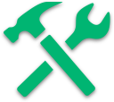

Sandbox is a place for you to create, innovate, and discover.
we welcome all disciplines
Sandbox is a student-run makerspace for artists, designers, and hackers to create amazing things. Come in with your ideas and build your project.
makers
artists
hackers

builders

because together,
we can build something awesome.
we can build something awesome.
resources
Sandbox provides resources to overcome the initial obstacle many people face when starting a project. We also offer mentorship to help get started.
community
Sandbox is a new but growing community of students spanning many different disciplines. Join us at a community event or just stop by to get involved.

FAQs
General
What is Sandbox?
Sandbox is a student-run space where anyone can make anything. We encourage anyone of any skill level to have a place to learn, discover, and create.
Who runs this space?
Sandbox is run by students and supported by faculty in the computer science department. Student organizers make the space operate, and CS faculty make the space possible.
Who can work in Sandbox?
We welcome people from all disciplines and backgrounds. The most exciting work comes from people of different fields coming together to collaborate and try new things.
What can I do in Sandbox?
Anything! Sandbox is a productive space that aims to provide resources to enable you to make or do whatever kind of creative project you want. We want to be as flexible as possible, so if there’s something we’re missing that you think could make the space better and more useful, add it to our suggestions list!
Where is Sandbox?
Sandbox is located in CSIC 3107, the third floor of the computer science building by the bridge leading to AV Williams. If the doors to the CS building are locked, swipe into AV Williams, go to the third floor, and cross the bridge to CSIC.
What does it cost me to use Sandbox?
It’s free! The goal of Sandbox is to put the ability to make things in the hands of every student, so we provide our resources free of cost. We do have some consumable resources available to use in your projects, but we ask you to use them courteously; leave enough for everyone! If you have a project that would use up most or all of Sandbox’s supply of a consumable, please provide your own.
Membership
Who are the members?
Members are students who have demonstrated a committed interest in using, mentoring in, and maintaining the space.
What do members do?
You don’t have to be a member to hack or learn at Sandbox. Being a member means you’re committed to actively maintaining and improving the Sandbox space and community. Members receive swipe access to the space so they can open the door for the public to use the space. Keeping the space open to the public is the main function of members. Members are also encouraged to represent Sandbox and promote the space at various events, other makerspaces, etc.
How can I become a Sandbox member?
A student must be an active user of Sandbox for at least one month and have demonstrated an interest in improving the community. Then, they can apply for membership.
Do I need to be a member of Sandbox to access it?
Nope! Anyone can work in Sandbox whenever a member is present.
Accessing Sandbox
What are the hours of Sandbox, and how can I get in?
Sandbox is open whenever members are present. Generally, it’s open on weeknights after classes.
How can I find out if Sandbox is currently open?
Soon you’ll be able to check in on our website to see if the door is open or closed. Check in soon for more details on this.
How do I get swipe access?
Only members have swipe access. There should be enough members that Sandbox is either always open or can be opened by a member when you need it. However, if you want swipe access and the other responsibilities of a member, you can apply for membership.
What if I want to use the space but there’s no members present?
If Sandbox is closed, you can try posting in the Facebook page (facebook.com/groups/SandboxUMD) to see if any members are planning on coming by.
Tools + Space
Which tools can I use?
You can use any of our tools, although some of the power tools require a quick safety certification.
Can I take materials and tools out of the room?
Tools should not be taken out of the room. If anyone is in Sandbox at any time and wants to use a tool, it should always be there.
Our consumable materials can leave the room if it’s a part of a project you’ve built. We prefer that you don’t walk off with individual components and pieces to go work on your project elsewhere. We don’t want to be a free parts catalog.
Can I move furniture around?
Yes! We encourage you to adapt the space to meet the needs of whatever you’re trying to do. Just make sure that what you’re doing doesn’t get in the way of other people trying to use the space. If you’re moving a table, check the underside of the table and make sure the power strip isn’t plugged into anything.
Can I leave my project here?
We have lockers that you can check out to store smaller projects. Just ask the member in the room and we’ll get you set up. Unfortunately, space is very limited for larger projects, and security cannot be guaranteed. We may or may not be able to store your larger project, depending on current availability. It’s more likely that you’ll be able to keep a larger project in the space if you’re only working on it for a short period of time. Long-term large project storage affordances are much harder to make.